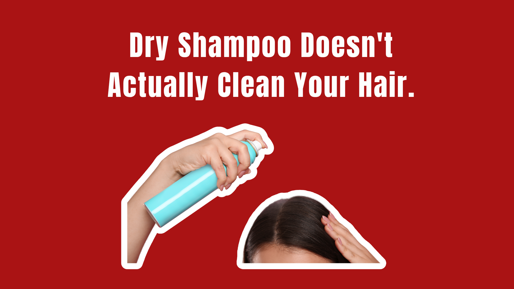

Dry shampoo has gone from emergency product to everyday essential.
Bad hair day? Spray it.
Running late? Spray it.
Don’t want to wash your hair for the third day in a row? Definitely spray it.
The pitch is simple: absorb the oil, add some volume, make your hair look clean.
And technically, it can.
But there’s one problem with the name.
It doesn’t wash your scalp. It doesn’t remove sweat, dirt, dead skin, bacteria, or product buildup the way traditional shampoo does. Instead, most dry shampoos use powders or other oil-absorbing ingredients to soak up excess sebum and make oily hair look and feel less oily.
Which makes dry shampoo less of a shower replacement and more of a very effective cosmetic cover-up.
And that’s where things get interesting.
The “Clean Hair” Illusion
The biggest thing dry shampoo sells isn’t cleanliness.
It’s appearance.
Ingredients such as starches and other absorbent powders can soak up some of the oil sitting on your hair. Fragrance can make it smell fresher. The powder can also give hair extra texture and volume.
Your hair looks less greasy.
That doesn’t mean your scalp has been cleaned.
Think of it like blotting oil off your face without washing it. Your skin may look better, but the underlying oil, sweat, dead skin and everything else on the surface hasn’t magically disappeared.
Same idea with your scalp.
Dry shampoo changes the way your hair looks. It doesn’t replace the cleansing process that happens when you actually wash it.
So when a product promises “fresh hair” between washes, it’s worth asking what fresh actually means.
Then Why Does It Work So Well?
Because oily hair is visually obvious.
Sebum weighs hair down and makes strands stick together. Dry shampoo absorbs some of that oil and creates the appearance of separation between strands.
Suddenly, your roots look lighter.
Your hair has more volume.
And the greasy shine is gone.
It’s a clever bit of cosmetic chemistry.
It’s also why dry shampoo can be genuinely useful.
Maybe you worked out and don’t have time for a full wash. Maybe you’re traveling. Maybe your hairstyle lasts better when you don’t wash it every day.
Dry shampoo can be a convenient styling tool.
The problem starts when “I don’t have time to wash my hair” becomes “I don’t need to wash my hair.”
Those aren’t the same thing.
The Scalp Doesn’t Get a Free Pass
Your hair might look perfectly acceptable after several applications of dry shampoo.
Your scalp may have a different opinion.
Repeatedly layering dry shampoo can leave behind product residue. Dermatologists caution that buildup can contribute to irritation, itching, burning or tenderness, particularly when products accumulate around the scalp and follicles.
And if your scalp already tends to be sensitive, fragranced formulas can create another potential problem.
Dry shampoos can contain fragrance, preservatives and other ingredients capable of causing contact dermatitis in some people. Aerosol particles can also irritate the respiratory tract if they’re inhaled, especially when the product is sprayed in an enclosed space.
Translation:
You’re putting it near your scalp, your skin and your lungs.
Maybe don’t treat it like hairspray you can inhale recreationally.
And Then There Was the Benzene Problem
This is where dry shampoo’s reputation got considerably more complicated.
In 2021, Procter & Gamble recalled certain aerosol dry shampoo and dry conditioner products after benzene was detected in some products. The company said the benzene came unexpectedly from the propellant rather than being an intentional ingredient.
Then, in 2022, Unilever recalled select aerosol dry shampoos from brands including Dove, Nexxus, Suave, TIGI and TRESemmé because of potentially elevated benzene levels.
Benzene isn’t something anyone wants casually introduced into a beauty routine. It’s classified as a human carcinogen.
But here’s where the internet tends to make the story messier than it needs to be.
This does not mean every dry shampoo is dangerous.
Benzene wasn’t intentionally added as a functional dry-shampoo ingredient. The concern involved contamination associated with certain aerosol propellants or raw materials. And recalled products were taken off the market.
There also isn’t evidence that occasional use of dry shampoo itself has been shown to cause harm in humans.
So no, you don’t need to throw every can in your bathroom into the trash.
But the recalls did expose something consumers don’t always think about:
“Clean” Dry Shampoo Doesn’t Automatically Mean Better
Here’s another beauty-industry trick we should probably stop falling for.
A product says:
And suddenly we’re supposed to assume it must be safer.
Not necessarily.
“Clean beauty” isn’t a standardized scientific category. Neither is “natural.” And removing one ingredient doesn’t automatically make a formula healthier, more effective, or safer for everyone.
The real question is:
What does the formula actually do, and how are you using it?
- A dry shampoo made with starch instead of another absorbent ingredient can still cause buildup.
- A fragrance-free product can still irritate some scalps.
- A “clean” aerosol is still an aerosol.
- And a product marketed as “scalp-friendly” doesn’t mean your scalp should never be washed again.
The Bigger Problem: We’ve Turned Not Washing Into a Beauty Goal
Somewhere along the way, “washing your hair less” became synonymous with “having healthier hair.”
That’s an oversimplification.
How frequently you should wash depends on your scalp, hair type, oil production, lifestyle and personal preference. Someone with an oily scalp may need to shampoo considerably more often than someone with very dry or curly hair.
There isn’t a universal number of days that everyone should go without washing.
And dry shampoo doesn’t change that.
It simply makes the waiting period more aesthetically convenient.
That’s useful.
But it isn’t the same as healthier.
So, Should You Stop Using Dry Shampoo?
No.
You should probably just stop asking it to do a job it wasn’t designed to do.
Use it when you want to absorb oil, add texture, extend a hairstyle or buy yourself another day between washes.
But don’t confuse cosmetic camouflage with cleansing.
- Apply it sparingly.
- Avoid deliberately inhaling the spray.
- Use aerosol products in a well-ventilated space, rather than repeatedly spraying them into the air around your face.
- And if your scalp starts itching, burning, flaking or feeling unusually irritated, take the hint.
Your scalp is not impressed by your third-day blowout.
The Truth Behind Dry Shampoo
Dry shampoo isn’t a scam.
That’s almost what makes it more interesting.
It actually works — just not in the way the name makes it sound.
It can make oily hair look cleaner.
It can make flat hair look fuller.
It can make you feel like you skipped a shower without anyone knowing.
What it can’t do is wash your scalp.
So keep the can.
Just don’t mistake it for a bottle of shampoo.
Because sometimes the beauty industry’s most convincing trick isn’t selling us something that doesn’t work.
It’s selling us something that works just well enough to make us forget what it actually does.
Sources: U.S. Food and Drug Administration. Unilever Issues Voluntary U.S. Recall of Select Dry Shampoos Due to Potential Presence of Benzene (October 2022). fda.gov · U.S. Food and Drug Administration. The Procter & Gamble Company Issues Voluntary Recall of Specific Lots of Aerosol Dry Conditioner Spray Products and Aerosol Dry Shampoo Spray Products Due to Presence of Benzene (December 2021). fda.gov